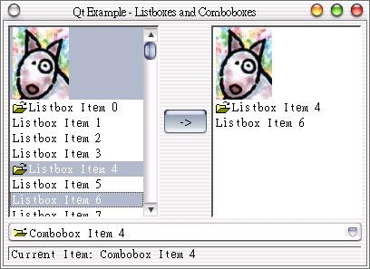

這個範例改寫自Qt的線上說明文件之範例，介紹如何處理QListBox與QComboBox的選取與應用。
首先編輯listboxcombo.h定義檔：
#ifndef LISTBOX_COMBO_H
#define LISTBOX_COMBO_H
#include <qvbox.h>
class QListBox;
class QLabel;
class ListBoxCombo : public QVBox
{
Q_OBJECT
public:
ListBoxCombo( QWidget *parent = 0, const char *name = 0 );
protected:
QListBox *lb1, *lb2;
QLabel *label1, *label2;
protected slots:
void slotLeft2Right();
void slotCombo1Activated( const QString &s );
};
#endif
再來編輯listboxcombo.cpp：
#include "listboxcombo.h"
#include <qcombobox.h>
#include <qlistbox.h>
#include <qhbox.h>
#include <qpushbutton.h>
#include <qstring.h>
#include <qpixmap.h>
#include <qlabel.h>
#include <qimage.h>
#include <qpainter.h>
#include <qstyle.h>
/*
* Constructor
*
* Creates child widgets of the ListBoxCombo widget
*/
ListBoxCombo::ListBoxCombo( QWidget *parent, const char *name )
: QVBox( parent, name )
{
setMargin( 5 );
setSpacing( 5 );
unsigned int i;
QString str;
QHBox *row1 = new QHBox( this );
row1->setSpacing( 5 );
// Create a multi-selection ListBox...
lb1 = new QListBox( row1 );
lb1->setSelectionMode( QListBox::Multi );
// ...insert a pixmap item...
lb1->insertItem( QPixmap( "dog.xpm" ) );
// ...and 100 text items
for ( i = 0; i < 100; i++ ) {
str = QString( "Listbox Item %1" ).arg( i );
if ( !( i % 4 ) )
lb1->insertItem( QPixmap( "fileopen.xpm" ), str );
else
lb1->insertItem( str );
}
// Create a pushbutton...
QPushButton *arrow1 = new QPushButton( " -> ", row1 );
// ...and connect the clicked SIGNAL with the SLOT slotLeft2Right
connect( arrow1, SIGNAL( clicked() ), this, SLOT( slotLeft2Right() ) );
// create an empty single-selection ListBox
lb2 = new QListBox( row1 );
QHBox *row2 = new QHBox( this );
row2->setSpacing( 5 );
QVBox *box1 = new QVBox( row2 );
box1->setSpacing( 5 );
// Create an editable Combobox and a label below...
QComboBox *cb1 = new QComboBox( TRUE, box1 );
label2 = new QLabel( "Current Item: Combobox Item 0", box1 );
label2->setMaximumHeight( label2->sizeHint().height() * 2 );
label2->setFrameStyle( QFrame::Panel | QFrame::Sunken );
// ... and insert 50 items into the Combobox
for ( i = 0; i < 50; i++ ) {
str = QString( "Combobox Item %1" ).arg( i );
if ( !( i % 4 ) )
cb1->insertItem( QPixmap( "fileopen.xpm" ), str );
else
cb1->insertItem( str );
}
// Connect the activated SIGNALs of the Comboboxes with SLOTs
connect( cb1, SIGNAL( activated( const QString & ) ),
this, SLOT( slotCombo1Activated( const QString & ) ) );
}
/*
* SLOT slotLeft2Right
*
* Copies all selected items of the first ListBox into the
* second ListBox
*/
void ListBoxCombo::slotLeft2Right()
{
// Go through all items of the first ListBox
for ( unsigned int i = 0; i < lb1->count(); i++ ) {
QListBoxItem *item = lb1->item( i );
// if the item is selected...
if ( item->isSelected() ) {
// ...and it is a text item...
if ( item->pixmap() && !item->text().isEmpty() )
lb2->insertItem( *item->pixmap(), item->text() );
else if ( !item->pixmap() )
lb2->insertItem( item->text() );
else if ( item->text().isEmpty() )
lb2->insertItem( *item->pixmap() );
}
}
}
/*
* SLOT slotCombo1Activated( const QString &s )
*
* Sets the text of the item which the user just selected
* in the second Combobox (and is now the value of s) to
* the second Label.
*/
void ListBoxCombo::slotCombo1Activated( const QString &s )
{
label2->setText( QString( "Current Item: %1" ).arg( s ) );
}
最後是主函式main.cpp：
代碼:
#include "listboxcombo.h"
#include <qapplication.h>
int main( int argc, char **argv )
{
QApplication a( argc, argv );
ListBoxCombo listboxcombo;
listboxcombo.resize( 400, 270 );
listboxcombo.setCaption( "Qt Example - Listboxes and Comboboxes" );
a.setMainWidget( &listboxcombo );
listboxcombo.show();
return a.exec();
}
關於配置的部份我們就不再說明了，您應該已經很熟悉了，請多利用線上說明得知相關的配置方法；我們說明這個程式中的幾個重要方法或技巧。
設定QListBox為可多重選取：
lb1->setSelectionMode( QListBox::Multi );
這是個設定多個項目的技巧，我們使用QString的引數方法並搭配迴圈，產生100個選項，arg(i)會插入%1的位置：
for ( i = 0; i < 100; i++ ) {
str = QString( "Listbox Item %1" ).arg( i );
if ( !( i % 4 ) )
lb1->insertItem( QPixmap( "fileopen.xpm" ), str );
else
lb1->insertItem( str );
}
當按下按鈕時，將執行slotLeft2Right()，這個函式會將選取的部份插入至右邊的QListBox；而當選取QComboBox時，會執行slotCombo1Activated()，這個函式會將其下方的QLabel設定為選取的項目文字：
connect( arrow1, SIGNAL( clicked() ), this, SLOT( slotLeft2Right() ) );
........
connect( cb1, SIGNAL( activated( const QString & ) ),
this, SLOT( slotCombo1Activated( const QString & ) ) );
使用QListBoxItem儲存取出的QListBox的項目，以進行選取狀態測試，isSelected()可以測試選項是否被選取，
由於選項中有圖、文與文圖並存的項目，所以我們分別判斷圖文的存在，以呼叫相對應的insertItem()方法來插入項目至右邊的QListBox：
void ListBoxCombo::slotLeft2Right()
{
// Go through all items of the first ListBox
for ( unsigned int i = 0; i < lb1->count(); i++ ) {
QListBoxItem *item = lb1->item( i );
// if the item is selected...
if ( item->isSelected() ) {
// ...and it is a text item...
if ( item->pixmap() && !item->text().isEmpty() )
lb2->insertItem( *item->pixmap(), item->text() );
else if ( !item->pixmap() )
lb2->insertItem( item->text() );
else if ( item->text().isEmpty() )
lb2->insertItem( *item->pixmap() );
}
}
}
下圖為程式執行的畫面：

|
|